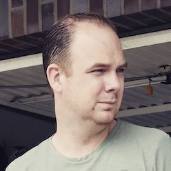
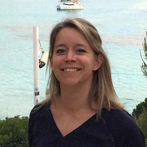
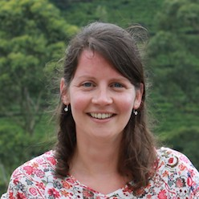
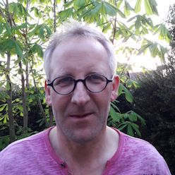

Thuis front team
Graag wil ik jullie hieronder voorstellen aan de leden van mijn thuisfront team. Ik ben ontzettend blij en dankbaar dat zij mij met gebed en veel organisatorische zaken ondersteunen. Daarnaast zijn zij ook communicatie partner naar mijn achterban. Mijn achterban bestaat uit mijn familie, vrienden, gemeenteleden, oud-collega’s en andere kennissen.
Het thuisfront team staat in nauw contact met mij, maar ook met de Gereformeerde Kerk Vrijgemaakt in Nijkerk en de organisatie Serving In Mission, die mij hebben uitgezonden. Mocht het zijn dat jullie vragen hebben over het project, nieuws willen ontvangen of een donatie willen doen, dan kan je contact opnemen met het Thuis front team: thuisfrontteam@ireneonmission.com
Leden
Jeroen van Voornveld
Mijn naam is Jeroen van Voornveld, 31 jaar, getrouwd met Annegré en vader van 2 schatten van kinderen: Fleur (4 jaar) en Jip (1 jaar). Ik werk bij Boni Supermarkt waar ik in 43 filialen een nieuw bestelsysteem aan het implementeren ben. Sinds april mag ik voorzitter zijn van de TFT van Irene. Het is mooi om als team haar te ondersteunen in deze geweldige missie! Om zo via haar onze medemens in Angola te kunnen helpen. Het is mooi om het als team te doen, geholpen door mensen die om haar heen staan. Zodat deze missie een succes mag worden.
Eline Visser
Ik ben Eline. Samen met mijn man en twee dochters woon ik in Leerdam. Ik werk als Spoedeisende Hulp verpleegkundige in Nieuwegein/Utrecht. Ik ken Irene sinds de 1e dag van onze HBO-verpleegkunde studie. Samen met Irene ben ik naar Ethiopië geweest, waarin haar gevoelens voor Afrika aangewakkerd zijn. Nu mag ik als TFT lid haar helpen om een droom te realiseren. Ik zal onder andere jullie contactpersoon zijn naar Irene, bijvoorbeeld door post door te sturen naar Angola.
Anneke de Groot
Ik ben Anneke de Groot uit Krimpen aan den IJssel. Als verpleegkundige ben ik werkzaam in het IJssellandziekenhuis. E n af en toe ga ik voor een periode naar Afrika om aan boord van de Africa Mercy van stichting Mercy Ships als vrijwillig verpleegkundige te werken. Hier hebben Irene en ik elkaar ontmoet in 2012 toen het schip in Guinea werkzaam was. Hier is een vriendschap ontstaan en heb ik Irene leren kennen met een liefde voor de medemens en Afrika. Zo heb ik ook het proces mogen volgen opzoek naar een missie voor langere tijd. Het is mooi met het team Irene te mogen ondersteunen tijdens deze missie naar Angola. In de TFT neem ik voornamelijk een communicatie/secretariële taak op me. Ik zal o.a. de email van de TFT beheren en de nieuwsbrief opmaken en verzenden.
Greetje Boxem
Ik ben Greetje Boxem, een 50-jarige bedrijfseconoom, getrouwd, moeder van een zoon, zzp-er. Ik houdt van terrassen, tijdschriften, vrienden, wandelen, wintersport en Zuid-Frankrijk. Ik drink graag lattes en chardonnay en wil boven alles graag Jezus volgen! Daarom draag ik met liefde mijn steentje bij (m.n. op gebied van communicatie en fondswerving) aan de bediening van Irene voor verstoten vrouwen in Angola.
Harry de Boer
Harry de Boer